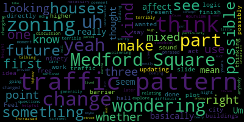

[Collins]: Right. Mr. Clerk, please let me know when you're ready to go and I'll call the meeting to order.
[Adam Hurtubise]: Vice President Collins, I am ready whenever you are. I don't see Council President Bears here yet, but I see all the other members of the committee present.
[Collins]: Thank you. He did let me know that he would probably be running pretty late tonight and that he would join whenever he can.
[Adam Hurtubise]: But I'm ready whenever you are.
[Collins]: Great. Thank you. All right, there will be a meeting of the Medford City Council Planning and Permanent Committee, March 26th, 2025. This meeting will take place at 6 p.m. via Zoom. Mr. Clerk, please call the roll.
[Adam Hurtubise]: President Bears has informed us it's gonna be late. Councilor Callahan? Present. Councilor Leming?
[Leming]: Present.
[Adam Hurtubise]: Councilor Scarpelli? Present. Vice President Collins?
[Collins]: present. For present, one absent, the meeting is called to order. Thank you all very much for being here tonight. The action and discussion item for tonight is 24-033, zoning ordinance updates with the NS Associates team. So tonight what's on our agenda is to follow up on two topics that we have discussed once before at our committee meeting two weeks ago. On March 12th, we reviewed a early framework for updates to Medford's accessory dwelling units or ADUs ordinance. We had a long discussion to get this update project started off. The update from Innes Associates flagged updates that the City of Medford must make to our ADUs ordinance to become in compliance with the new state law that requires that ADUs be by right in any residential district that allows single family homes by right. So we talked about that and what that means for our zoning ordinance. And the zoning consultant and associates also flagged areas where there are more decisions left up to the city when it comes to local ADUs and options that we have for further updates we can make to further regulate or encourage ADUs beyond just the new regulations that are required by state law. And so we'll be looking at an updated draft of the ADU's ordinance tonight in response to the questions and feedback that councillors and committee community members had two weeks ago. We will also tonight be visiting the topic of updated zoning for Medford Square. This will be our very first time looking at a proposal of an updated zoning map for Medford Square and it will not be the last time we talk about it either. Two weeks ago, we looked at a really preliminary introductory, a 30,000 foot view of a zoning map that encapsulates a commercial framework or a zoning map encapsulating a commercial framework for the city touching on all major squares. corridors, mixed-use, and commercial districts, and we decided that from there we're kind of going to draw the telescope in. We're going to go from that bird's-eye view commercial framework and focus the dial on Medford Square, and then West Medford Square, and then other major corridors and mixed-use and commercial districts. So the first one up is Medford Square. I know that the Innes Associates has presented, has prepared Um, some maps and some diagrams for us to look at and respond to tonight. So we'll be able to get a lot of questions and ideas and concerns on the record. And that will be followed up by, um, further conversations on this topic in this committee, um, over the next several weeks. So I know that Paola has a presentation, um, on all of this before I throw it over to Paola. Um, I want to ask if any of my fellow Councilors have any questions or comments to start off the evening. Great. Seeing none, plenty of time for that later on. Paola, please go ahead with your presentation.
[Paula Ramos Martinez]: Thank you. Good afternoon. Thank you very much, Vice President Collins. If I may, I'm going to start sharing the presentation. Okay. So, um, I'm Paula Ramos Martinez for anyone who's new in this. We've been working with the city of Medford for the rezoning, um, from what taken the principles that were identified in the comprehensive, um. Plan that was done two years ago. Um, um, the senior, um. Sorry, I'm the senior urban planner and designer. I'm here with Jimmy Rocha. He's the data scientist in the team. So he will also be on the team here today. So today what we're going to look is at the process timeline, what we have been doing, and what are we going to do for the next months, the opportunities for when public comments can be given, and when those are going to be in the near future. we will do a small introduction. We will talk about the mixed use districts, especially focused on Medford Square and then to the AGU draft. So we've started last planning and permitting committee meeting in March 12th with all the commercial block. We will be looking at Um, so we will be looking more into the squares met for square was met for and then other quarters. We have worked and passed over. The City Council has passed already. Mystic Avenue quarter and Salem Street quarter. Um so we will be looking more now on to the that. Later on in May, we will be looking at Wellington and Glenwood, but that was that will be really the last piece of all the big puzzle. We have been working since January in the residential districts. Um, that is important because. In the very near future, the CDB the Community Development Board in April 2nd. We will be talking about the that will be an opportunity. And then in May, we will be talking about the commercial and mixed districts. Tomorrow, we will be having a residential public Q&A. That's something that we also add into this layer of public engagement. And so tomorrow, Thursday 27th, we will be at the city hall to answer any questions. There will be a presentation of what are we doing. We will present some maps and help anyone to understand what are we doing and hear from you all the feedback that we can. So once we go to the city board, we have already the public feedback. Um, we will do also as well one for the squares and other for the corridors and then for the Wellington area. And those will be, um, as well published. As we go alone. Um. So in March this month, we will be looking at the commercial framework, Medford Square. We will be looking at the ADU. Next month, we will be looking at West Medford and other corridors, and then different administrative citywide topics, a site plan review, community solar, non-conforming, et cetera. And then parking and transport demand management will come in May with the Wellington area. So again, here's the same thing just to... Sorry. Same structure as before, but by... Sorry. By the... at what time of the process we are. So we presented first the topic, then the city council will refer the topic to the city board, then the city board would vote the topic and refer it back to city council. So all these times. And so we will publish here all the time, updating all the new public meetings that we have, or the new already scheduled city boards meetings. So as we said for many times, We have been doing the rezoning of what came from the METFOR Comprehensive Plan and the METFOR Climate Action and Adaptation Plan. So all the principles that were identified in this plan, we are taking all the ones that have something to do with zoning and we are implementing them now. This was the vision where we can see the corridors, the squares, every different district or node that was identified as something characteristic that needed to, that needed to, that had some goals and objectives with them. So we have the, these are now the mixed use districts or areas where we are going to work. Um different quarters squares. We also are going to work with the institutional that is met for tops area. And then the Wellington that will come later on. This was the commercial framework that was presented last in the last planning and permitting committee meeting. We have Salem and Mystic that you see with a black outline. Those are already done and were already approved by the City Council. So we are working on the others that you see here. Today we're going to focus on Medford Square. So we are presenting here what you're seeing here in this map is your current zoning. If we do a little bit of zoom to that, we have City Hall in this area. I hope you see the cursor. Then we have the Chevalier Theater is in this area, Forest Street. Then we have CVS and Joseph School in here in High Street, more to the west. So what we have here are four different districts that we see. The commercial one is the pinkish area. Then we have apartment two, that's the orange general residential. It's really in the back of Salem Street towards Ashland Street. That's the area for general residential. And then single family that we have, internal and governors block. So in commercial one, what is already permitted in this area? So for residential buildings in all the pink area is six stories by right. That's the height that is permitted. The maximum height for residential buildings, multifamily is six stories by right. For commercial buildings is four stories by right. And then other permitted structures is 15 stories by right. So from four to 15, depending on the use, that's what is permitted in the pink area. In apartment 2, we have residential building that's 60 stories by right. Commercial use is not allowed in the orange area. And then very specific hotel is 15 stories by right. Then we have general residential. This is single unit dwelling and two unit dwellings that are permitted. And then single family, it's only one single unit dwelling permitted. So this is the current zoning. It's not what is existing there. What is existing there is usually very low. We will see it later. But we have some sections prepared, so we will see that. But this is what is the current zoning at this point. There are some dimension and standards. We are not going to mention really the dimensions today. So we're going to look more into the heights and the profiles of the streets and how that fits and what is the most interesting or the best fit in the area. What is the most feasible? So we're going to look more at heights and uses than the dimension standards. But this is in your current zoning. I just wanted to show it. And this is what we are proposing. So in the previous districts, we had mixed use. In the previous quarters, we had mixed use one, two, and three in Mystic. And that is from the lowest scale to the highest scale, being mixed use one, three stories by right, and then one plus one up to four within incentive zoning. we wanted to have an in between. Um makes use two is four stories by right plus two with incentive zoning and then makes use three. It used to be quite high up to, uh, 12 stories in this case. Um so in this area was something missing. We wanted to have an in between, um, makes use two and makes use So right now, mix used to A, which is the blue, the darker blue, is four stories by right plus two within Sentient Zoning. And that's what we see, for example, in Salem or in Mystic. And then we have created mix used to B, which is the more purple, bluish purple violet. And that is six stories by right plus two incentives earning. That means up to eight with incentives earning. And then the mixed use three is six stories by right, six with incentives earning. So we kept a small portion of the mixed use one. It's south to High Street, north of the Mystic River. That area has quite a few of historic buildings that goes from one to three stories. Um, there is one that goes up to four. We want to keep those historic buildings. And there is not a lot of land to grow. We will see it in in one of the sections that we have done is cutting that area. So we are also looking at north. So we are going to a lot of these buildings are going to cast shadows on the streets and on the other side. So on the other buildings that are in front. So we are need to be very careful with that. So that's why we kept a small portion of it as it still makes use one. Then the general, yes, Matthew, if you want to, Matt, if you want to say something.
[Leming]: Feel free to finish, but once you're done with the slide, I just had something I wanted to say.
[Paula Ramos Martinez]: Sure. Absolutely. Then we have the mixes too. So mainly all the northern areas or some in between are going to be that mixes too. That is four stories and maximum that six stories up to two. more with incentive zoning than six stories maximum. And then we have in these corners and also near the city hall and in front of the on Clipper ship Dr. those are going to be that mixes to be and then we have a smaller area for that mixes three that is connecting with a mystic river. With the mystic quarter. And the already existing, which is quite high at this point. So that's where it fits to make it conforming what is already there. We can comment on this. I just want to show Matt that we have some sections that I would like to go through them. But if you want to already talk about that, the map, feel free to question.
[Collins]: Thank you, Paola. Yeah, I think that I've previewed the section studies that you're going to present next, and I think folks will find them very interesting context. But let's take a pause here in case there are any preliminary questions or comments on this aerial view. Councilor Leming will go to you first, unless you wanna hold your question for later.
[Leming]: No, so the first one was, I was just, was looking at the plot, the mixed use to be directly to the right of city hall. I was just wondering if that could, if there would be any logic And updating that to mixed use three, because kind of thinking that, like, higher buildings there could act as a sound barrier to some of the traffic on on ninety three. So, yeah, I was just I was just like, what I was just wondering, first off, if you think that that could possibly be an idea that would work or what you're. what your thoughts would be on this. I also had questions relating to whether or not there could, this could just be a discussion point for later, but whether it would be possible to change the traffic patterns in or if the traffic patterns in Medford Square ever were changed, which I think could be something that, you know, we might see like 30 years in the future or something like that. But basically, I just don't like the traffic patterns that we see in Medford Square at the moment. And I'm wondering if the zoning changes could affect that, could affect that at all.
[Collins]: Yeah, thank you for putting that suggestion in that question on the record, Councilor Leming. I don't know if Paula has a response to this. I'm certainly always helpful. I think these are exactly the areas where we should be evaluating for where our subdistricts of greatest height and density makes most sense. And I've thought before that I'd really love to see some increased height along 93 so we can kind of kill two birds with one stone. adding some development potential while blocking some noise from 93 for the residential and business areas that are closer to the square or bordering the highway. On the matter of the traffic patterns, I think most folks on this call, whether they're Councilors or community members, already know that through zoning, we cannot and we won't directly change traffic patterns. I know that you know that, Councilor Leming, I'm just stating that for the record for in case there's any newer to zoning folks on the call. Not that that's what you're suggesting. I think is the the question is kind of like forecasting ahead for feel free to clarify.
[Leming]: Yeah, sorry, that was phrased terribly. I'm going to basically. I think that the traffic patterns in Medford square terrible. I would like at some point in the future to explore changing those traffic patterns. It's not up to it's that's not under the purview of zoning at all. Um, but I'm wondering if the, if the current zoning. Or if anybody from planning can generally comment on that, like, if we were to have, like, some change in the traffic pattern to Medford square with the zoning. Like, how would that interact with zoning? Like, would it would like it make would. Increased height there make it more difficult to change that in the future. Uh, would it be. Would it be necessary to change the traffic patterns if we're finding like, more cars coming through just just like some somebody that knows more than me talking about traffic patterns, I think would be would be helpful. Um, particularly like the high and main street intersection. So.
[Collins]: Thank you, Councilor Leming. I'll go to Planner Evans and then Councilor Callahan. I do just want to note kind of at the beginning of this discussion, or kind of whenever we're talking about like traffic patterns and zoning changes at the same time, I think it's wise to enter into that discussion, not assuming that development that increases in development will always necessarily at every step of the way also result in increases in car traffic, especially since we're considering policies such as TDM, transportation demand management, at the same time as zoning. This can interact with traffic patterns in In many ways, it's not a 1 to 1 relationship, so I think this is going to be 1 of those incredibly multifactorial things. I would think that the short answer would be zoning would not. Directly overlay onto our ability to update our future traffic patterns because. eminent domain taking of public lands that are used for our roadways, and a lot of our roadways leading into Medford Square are state roads. We're going to have the same land mass available for traffic lanes that we could design however we wish if we had the millions of dollars required to do that. But I will go over to Planner Evans for a response and then Councilor Callahan.
[Danielle Evans]: Thank you. Daniel Evans, Senior Planner, PDS. Yes, that's something that we have been thinking about. I was at a conference last fall, and one of the sessions that was really interesting was how one-way traffic is super bad for economic development. And I think it was Hyannis on Cape Cod actually undid all of their one-ways and made them two-ways. And it actually showed that it didn't increase like traffic as in any, you know, causing delays, it actually resulted in less circling less vehicular miles traveled by the cars. It increased. visibility of certain businesses, because if you're only going one way, you're never going by that one. So, for example, Riverside, the portion in the square where you can only pass through it if you're going eastbound. So anyone who's going westbound through the square, but then comes back another way, never ever goes past Salem Street. So, as part of the, as I'm sure you're all aware of the Medford Square City parking lot RFP, I think changing the roads is on the table. I believe a lot of these are city controlled. I'm not a traffic engineer. I think the amount of roads we have is probably okay. It's just the 1-way versus 2-way. I very strongly feel that they should be 2-ways. And if I was king, I would also close the exit to 93 because I think we have too many. So that is a huge problem. But I don't know if... Director Hunt had anything to add on what is being discussed as part of the parking lot RFP and if they're asking any of those questions. But yeah, that's all I have to add. And I'm super glad that Councilor Leming brought that up because it's something I think about every day is the traffic patterns are terrible.
[Collins]: Thank you for that planner Evans, Councilor Kelly and go ahead.
[Callahan]: Thanks. I also support and I'm curious about the idea of having height next to 93. So in that parcel furthest to the east. So I mentioned the answer to that question from the planners. I also want us to look at the parcel furthest to or the parcels furthest to the west. When I look at the other map that you provided a number of meetings ago that shows the actual Current zoning or not zoning but current like existing buildings that is marked as orange, which says condo conversion two to three family so I'm not sure exactly what buildings exist there at this moment that did not seem. to go drive with my recollection of what buildings are there. But like understanding what height is there right now would be helpful. It does, you know, that whole section abuts on multiple single family or like currently mostly single family places. So I'm a little bit curious about can we get more height close to 93 and maybe get something on the other side that's a little bit closer to match the residences that are just to the west and north of it.
[Paula Ramos Martinez]: Um, yes. If I may answer some of this, um, so about the, I'm going to go by, um, order. So to do something in the, to increase to MX three, the really far, um, the, the, yeah, the furthest East, um, parcels. So these are very, very narrow and we don't have a lot of space between the 93 and the City Hall. I'm really afraid we would need to do really a little bit more of the studies. We don't have any section there. So I would, before saying yes, we can do that. I really need to study a little bit more, because I think that it will have quite an impact. And I don't, I don't feel that we would like to recommend any kind of wall that you see there from these houses that what you see, it's immediately a block of 10 stories high. So let's We need to do a little bit more study, especially on the on the on the narrowest part of those parcels. We could extend it a little bit more, but but I'm not sure. Yes, Matt.
[Collins]: Go ahead, Councilwoman.
[Leming]: Well, yeah, I mean, just on the, just on the, the concept of the view from the houses, just to the, uh, uh, just to the right of that, it, it doesn't really provide those houses don't really get much review anyway. Cause I mean, I lived there, we're mostly looking at the highway. So I just, just kind of put that thought out there that I don't think that that, uh, I don't think any mentioned those houses at all. Yeah. But would it also be possible to, like, I only see that part of that is, is it possible to just take maybe the south part of that parcel and make it into MX3? Because one part does seem kind of narrow, but the other part seems a little bit more beefy.
[Paula Ramos Martinez]: Yeah, so if I may, yeah, so we can look at that. Of course, if we go quite high, we need to provide parking somehow. So obviously, we are going higher density. We don't have depth enough. That's something that we need to think about. So that's a good question. We need a little bit more research to answer that specific one. We are permitting at this point six by right up to two more, so we are looking at eight stories, so it's going to be already high to block noise, etc. Let's see if it's feasible to propose to that jump to mix three, so we will look at that. Then for the other question about the traffic, so of course, yes, the traffic patterns is something that is something different from zoning. Now, would it affect zoning that we change the patterns of the traffic? If it's two ways or one way, that doesn't really affect what we are doing. If it's cutting some streets or It could be that maybe the uses we would if we have something residential and then we cut a street and it's pedestrian maybe we would like to do some commercial on the ground floor, so it could. It could do something like that. But what we're proposing here is mixed use. So it's quite flexible for the future to do or all residential building or mixed use building. Or a commercial building. So we are given with the mixed use quite a lot of flexibility. Um, so I don't think that it would affect the changes in the traffic patterns a lot to what we're doing in the zoning and that if they change something in zoning should change. what we can do is to, as we did for Salem Street and Mystic, is to talk to the Department of Public Works and see if there are any plans in the future or if they have any idea on whatever future possibilities that they are studying, if this would fit with that. That's something that we could add that I think it's actually very interesting to do. And then the last answer about these, now the west towards Winthrop Street, we have some sections, so I can tell you exactly what are those buildings. The Condé Conversion 2-3, that's obviously not right. I'm guessing that that's what you saw in the building typologies that we had from previous studies, but that comes from the assessor's data, so it can be that it's wrong. But these are multifamily. These are six stories high.
[Callahan]: I'm looking at the planning and permitting agenda from the 12th of February, which is an amazing one because it included a lot of maps, and this is one of those maps. It's just the one that shows like every parcel and what exists on that parcel, and it's marked as orange, which is condo conversion duty family. Not sure why.
[Paula Ramos Martinez]: No, that is not correct. So those are multifamily. These are six-story high buildings.
[Alicia Hunt]: If I might, they're six-story condos. So I wonder if that's why they're marked that way.
[Paula Ramos Martinez]: As condo. Yeah, could be.
[Alicia Hunt]: Thanks.
[Paula Ramos Martinez]: Thank you, Alicia.
[Collins]: Is there any further questions? That's a great catch, Councilor Callaghan. Thank you for that. And thank you for running over those initial suggestions, Paola. It sounds like there is interest in, you know, I think the point of these early discussions is to put these kind of ideas and suggestions out on the record, and then the consultant can follow up, look more deeply at the areas where we want to investigate a little bit further and get back to us with an answer on, you know, for example, Is it feasible to consider a higher and more dense sub district for specific parcel it sounds like there's an interest in that being further investigated for a further meeting if it does turn out that it's confirmed that the lots directly abutting 93 to the east of City Hall are really too narrow to accommodate mixed use three, then that'll be good information to have. Maybe the same is not quite true for that large kind of triangle-shaped parcel, but I think that that's a great thing for us to take out of this meeting as a point for future research. So thank you for speaking to that. Paola, I'll put that on my notes as well. It is great to hear that potential traffic and roadway changes are being considered at the same time as respondents to the Medford Square RFP are being considered. Because if improvements can be made faster than perhaps I pessimistically hoped, then I suspect that everybody would be happy about it. Gosh, the Medford Square traffic really needs to be made slower and safer and better for actually enjoying the square. So we have a lot of other views of this, and I'll go to Director Hahn first.
[Alicia Hunt]: I just want to take that moment to plug the fact that part of it is the interaction between the lights at Medford Square and then the South Medford, and DOT has just announced a 25% design meeting in April in the Medford City Council Chambers on that project. Because I think that anybody who's caring about that is gonna care about this. And I'm gonna scroll real quick. I think it's April 23rd. And as of right now, there is no online option for it. I don't know what, I'm not involved in organizing it. But yes, it's Wednesday the 23rd at six o'clock in the Council Chambers. to talk about it. And I can't remember if it actually touches the light at Medford Square or just everything right up to it.
[Collins]: Great. Thank you so much, Director Hunt. That's great to know, and we'll be sure to find that link so councillors can further promote. That's a big deal. Changing the signaling would be a really big deal for traffic in and out of the square. So I know we have many other diagrams that Paola has prepared for us. I want to make sure that we have time to look at them, respond to them, and also talk about the updates to the ADU ordinance. So let's proceed through the presentation, Paola, please.
[Paula Ramos Martinez]: Sure, if I may. So we did a set of sections to explain, to see the relationship between the street profile and the building, especially when we start changing the heights. A section is as if we just cut through the building and like if we have a cake, we cut the cake, we see what is inside and we see those layers. That's what we are doing here. We just cut through the buildings and the street to see what do we have in that plane and how it relates the section of the street with the buildings. So the existing section of High Street, that's section one in here, we have the Mystic River on the southern part, what we see now on the west. There are a lot of historical buildings all around the Medford Square, but these are really grouped in this area. They go from one, two, three, There's only one that goes up to four stories. And then in front, that is a very low level, all commercial. And so if we look at the shadow as well, which is very important, if we go higher than the four, we will start casting shadow onto the other building. So in order to keep that not shading the buildings, Um, that's why we propose that MX one in this area and then the other side can go up to six. Um, at this point in these exactly location, we have a parking behind. So other measures of, um, how these buildings should be shaped in order to not cast shadow. If there is some, uh, another residential complex or another mixed use building, or if it's a parking, it will depend on the design. Um, if we continue to high street, and these are the ones and Callahan was mentioned. So what we have from. From that, um. Let's say from the school from this area after the mixed use one that we had in the plan, there is a drop between high street and then Parkway. Um. This is the Mystic Valley Parkway, sorry. So there is quite a drop. We have almost like two stories. So what we see from High Street, our buildings are four stories high. But in reality, they are six stories high. So the first section that you see, the upper one, is going to be the existing section, what we have right now. And then what you see beneath those are usually a proposed section. And if we have different proposals, we have version one, version two. So we have six. The residentials in front are also a little bit elevated, around three foot elevated. That makes it also that it's not so into in, how do you say it, that it doesn't cast shadow on them, that it's a little bit more light. And yeah, that breeds the building a little bit more. It's also because it's a little bit up. So here the topography helps a lot to densify. So we have a proposed section where we add two more with a step back. still the shadow is really not important. It doesn't cast shadow on the neighbors. So we have that proposed section of going up to eight. So six by right plus two. And we do have another proposal where if we really want to densify this area, we don't have to add more, but if we start covering the parking and we add this, we take, we profit from the topography change and we have this Um, we build this two layers of parking of cover parking, then we can build on top another six of residential and we can also build on the other side. So when we are starting to go really higher on the density, it starts to be feasible to construct a covered parking. So in this way, that area, especially, which are very, very deep will allow for, um, A lot more buildings. At this point, they are little islands in a sea of asphalt, of parking, nothing happening, really not. Nothing is activating this area. So if we have this a little bit more density allowing, we could actually build more around parking, hidden, and so that this area will become a lot more interesting facing the street. Yeah, so this is the second. The V2 is the proposal that we also provide and that will be possible with this zoning. If we go around, so now we are in section three Winthrop Street. So right now in this area, there are seven levels depending on where we are. This, for example, is seven layers. The previous one was six. And it really cast a long shadow. This is going to be east. So it's only on the morning that will provide the shadow. After that, it won't bother any of the neighbors on the other side of Winthrop. So we could go up to six or eight, but we always really need and push it more towards the, instead of having a big parking as they have right now, and the street, we could push the buildings more towards the street, but then we need to be very careful on casting the shadow, et cetera. So some studies of shading should be done for this proposal from this area. So what we want to include in the draft is that whenever you, Um. The developer goes up to the incentives owning the story. So when they're taking that plus one plus two that they have to do a shadow, um, study so to see if. They are going to bother the and that the building is shaped in ways that are not bothering the existing in one side is High Street, in the other side is Mystic Valley Parkway, and then we have park, a little bit of park, and then the Mystic River. It would be very interesting that what we could do is also take advantage of that topography drop, putting some parking in there, and then having some commercial towards the park. that's the reddish color, that's always going to mean the commercial, retail, or active ground floor, which can be up to two levels, and that it will serve that park. There is like a canoe area in here that they can rent, so it would be interesting to activate a little bit more that area and to give a front, a built-in front towards that. we can also go up to eight stories high with those two being incentive zoning. Now we go to Salem Street. This is section five. So in here we have small logs. This small triangle, there is not a lot of depth to really go higher. So let's say that this is the Bayreuth 4. It will cast the shadow towards the building in front. This is the south area, the south building in here. So we can go a little bit higher and then be careful with how high we go because of the shadows. And on the other side, we can easily go up to the six stories high. Um, if you go to Clippership, Doctor, so this is the long parcel, um, at the, um, along the Clippership Road, uh, Doctor. Um, if we see that this is the Mystic, we have the Mystic in, in, on the right. Uh, what we have now, it's a lot of road, uh, parking, another internal road, more parking, and then the building. making it very far away from really the park and the river. There is really disconnected. So what we try to do is give a lot of more height so that we can really start going a little bit back, but really connecting and giving an active ground floor to that side of the clipper ship. Um, and then always being mindful that towards Riverside Avenue, this lot will cast a lot of shadow. So there is this idea of having the parking inside, ground floor active towards both of the streets, so we want to keep both streets active. Um, and then being mindful that that building can be shifted with setbacks in different areas so that it's not very um, imposing on people walking and passing by, but also that is, um, respectful with the shadows, et cetera. Um, so at this point right now, the existing is only one story. We think that in this area, it can totally grow a lot. We can also have space for parking in between cover parking and making really active both sides. Porter Road is really up towards the single-family district. It also has a drop on the topography. So this is the existing section. We didn't do any new one because this is enough to see for the stories that we can make. In this area, we have a lot of historic buildings, so we want to keep them as they are. of protecting the historical buildings. And this, for example, was already six stories high, and then just taking advantage of that jump of topography. We did a new one. So The city asked if we could check those heights and really go lower towards Clippership and higher on the Riverside Avenue and Salem Street so that different areas could have a look onto the river. So we did that section and that analysis. To be honest, that's very difficult to get, because even if we go low in Clipperside or Riverside Avenue, the view to the river, it's really difficult. So we still recommend to have always looking at the shadows. South side of the street should be lower than the north side of the street because of that casting shadow. And then trying always to have the inner area for parking and letting the active ground floor along the streets. We can go higher to two floors of commercial if that's something that we want. We also believe that this area of the southern part, there is a very big lot. It has a lot of depth and it has a lot of opportunity. And that means that if we give height, we can also get back a lot for the community. So we could have those pocket parks or squares or seating areas that we have in our incentive list, so that it will make and that is strengthened between the Mystic and the buildings. So that is really one strong reason to go really higher also on the south of Riverside Avenue. So here we had all these studies and sections. We will send this if I don't think you will have it. So we will send it and really hope for all your comments. These are not the architecture that will come. This is just proposals of things that could happen and could be. This is in no way an image of what it's going to be. But these are the opportunities that we could have with this zoning. wanted to leave that clear.
[Collins]: Great. Thank you so much, Paola. This is certainly a lot to digest. This is a great jumping off point for our discussion of Medford Square. And I know this will feed into our discussion of West Medford Square as well. So we've had the chance to look at a bunch of these kind of snapshot section views from around the square. And I think that this could be a great opportunity to get Councilors and city staff's initial impressions and questions and more suggestions like we had just earlier. And then of course, as Councilors and community members have additional feedback we can be taking that in between these meetings as well. And I thank you for that last note that you made, Paola. I think it's always helpful to keep re-emphasizing what we mean when we look at these maps and when we talk about zoning. I think the way that you put it was really well. When we look at the zoning map, this is not you know, one, this is a proposal, this is a draft, I'm sure this will change before it is something that we vote on. But also, this is not a map of what the square will absolutely look like, even if this zoning were to be adopted. This is a map of one version of what could be made possible. So even when we say, you know, this could go up to eight, this could go up to 12, this could go up to six, that's depending on if developers are trying to develop just within what's by right, or if they're taking advantage of incentive zoning, to a certain degree, to maximum, to minimum, not that under this new zoning, every building shall be a certain height, setting a minimum and a maximum. With that, I'll go to comments and questions from councillors. Councilor Callahan, please go ahead. Thank you.
[Callahan]: I really appreciated those look at the heights and the shadows. The one that I was curious about was the Salem Street one. It does appear that all of the others covered where the shadows would be on the north side for Salem Street. How does it work as we're looking north of Salem Street? When we look at the housing that's north of Salem Street, and there's a road there, how does that? I think that wasn't covered. Almost everything else, it covers what happens. But those buildings, which we're changing on the left side that you're circling right now, what about the housing that is on the other side of that? That's what I'm curious about.
[Paula Ramos Martinez]: Yes, so for any of the residential district, we had this on Salem Street and also, yeah, I think we added in Salem Street draft where there is, we will have some extra setback, added setback from a residential towards a mixed use area or commercial. And then we had this transition in 45 degree so that the heights cannot be against the houses. When we bring again the draft, I will also implement that so we understand that we are always protecting the transition between residential towards these higher buildings.
[Callahan]: That's great. Thanks so much.
[Collins]: Thank you. I see a couple hands. I'm sorry. I totally forgot to say this at the end of the meeting or sorry at the beginning of the meeting will take all public participation on this topic after Councilors conclude their comments, then we'll move on to 80 years and we'll take all public participation on 80 years at that time. So please hang tight. We will get to you. Um. Seeing no other Councilors hands raised right now. I just want to put a couple of my own comments on the records on the for some of these specific sections. That we looked at in general. I think that this framework is about right. I'm sure that we will massage some of where some of the sub districts start and end as we continue to iterate on this. including some of the suggestions that have already been made tonight. I just wanted to note, I find it particularly exciting what the consultants are bringing forward around how we can use these like topography changes and the slope of the earth below our buildings to our advantage when it comes to creating more potential for development and also hiding parking. Like for example, yeah Paola knew exactly what I was talking about. These places where we can use the slope of the land to our advantage to add height in a way that does not feel like you're adding height in bulk from for in this example High Street. So we can have two more additional floors and it doesn't feel like two more additional floors from the pedestrian's perspective. I think that's great. I think that especially when we're considering like the south side of High Street to Mystic Valley Parkway. I know for myself I'm so used to seeing those parking lots kind of right along the parkway in front of the river that it's hard for me to even to imagine those being destinations instead of just parking. But I'm particularly enamored by version two for the south side of High Street and for Mystic Valley Parkway. We know that we need parking to, you know, parking has a big role in the square. It is where a lot of our city's major destinations are. We need people to be able to drive and park there. And we also really do want to be using more of our, I think we want to be using more of our land area for giving people places to live and stuff to do and companies and offices to visit. So I will be, I just wanted to throw my support behind version two for this particular section and then for the south side of High Street as well. I think that's a really smart way to be using our topography. And in general, I know this is brought up for Clippership Drive as well. I think in general, hiding parking is a great idea because it allows us to keep our building frontages exciting and full of places that people can walk into. The only kind of question that I think I'll have going forward is, and I'm not sure if this is really an answerable question or if this is something that will vary development by development, is when we're talking about putting parking inside of a building, how does that impact the actual usable, rentable, inhabitable space within that floor map or within that parcel? Though as I think more about it, it seems that that's probably more of a economic consideration on the developer side. But I just want to make sure that we're not trading, useful commercial and residential space for parking, whether it's inside or outside of a building envelope. Having put that on the record, are there any other additional comments, suggestions, references from Councilors on the maps that we have looked at so far tonight? Things that we want our consultants to be keeping in mind as these are being revised for our next meeting. Seeing none, we've got a couple great ideas on the record already. And of course, councillors can always contact the zoning consultant with ideas, either via me as committee chair, Director Hunt in between meetings. All right, seeing no further comment from councillors, I will go to public participation on this item. I will call on you. Go ahead, Councilor Callahan.
[Callahan]: I am just curious that the cemetery lot is zoned as mixed use.
[Alicia Hunt]: I'll just comment on that. Basically, we just zoned the whole area. The reality is that the cemetery lot isn't protected. It's protected with all kinds of historic things, and it could never actually be developed. It just needed to go into one of them. Actually, I think the consultants had that whole block as the mixed-use 2A, and I had recommended that we go a little higher because next to that is the parking lot that is the parking garage and the medical use, and they have so much space and it's owned by one entity. that they actually could go higher next to the cemetery. So honestly, I thought they would just flip the whole block to be 2B because we can't, the reality is nobody could ever touch that cemetery with all the protections on it. So it doesn't really matter what we zone it. Okay, wonderful, thank you.
[Collins]: Great, thank you for the question, Councilor Gallahan, and thank you for the answer, Director Hunt. All right, I'll go to public participation. I'll ask you to unmute on Zoom, give your name and address for the record, and then each participant will have three minutes. Dave, go ahead, name and address for the record, please.
[David McKenna]: David McKenna to Vine Street. I live about a five-minute walk from City Hall, so I'm excited about this new redevelopment. that the areas that we've seen in the proposal that are four stories along Salem Street on the south side, along High Street on the south side, and the entire three plus one section around the police station south of Mystic Valley Parkway. I feel like that's a missed opportunity, particularly south of Mystic Valley Parkway. That's already zoned for, I believe, A max of 12 stories and then right next to it is a max of 4. it doesn't really make sense. It's an industrial area and. You know, I think that that could easily be, uh, up to, you know, 8 stories without any impact on. Uh, you know, any existing residences. Um, and, uh, you know, I've heard a lot of concern about shadows and I think. That's, you know, the step backs, uh, the 45 degree. step back from residential makes sense. You know, that's something that we've seen before, but the idea that, um, there's a harm that at a certain time of year and for a few hours in a day, there will be a shadow on a sidewalk or on the front of a building that that's a harm I disagree with, uh, completely. And, you know, it's actually when you're in this area in the summer and it's hot, it would be nice to have a shadow. Um, and so, I think there should be less concern about shadow cast on a commercial building. It's just not a realistic concern, especially when some of these buildings are already four stories tall. So we want to be adding density, not afraid of something that might happen for a few months that is actually not a bad thing. And this is the last point on the West side of this map. Um, the buildings, uh, on the West end of the map are six stories on the North side. There are already seven stories on the, um, on the winter street side. Um, and they go up to eight stories currently, uh, on the very far West end of the map on the mystic Valley parkway side. So I don't feel like this proposal is adding much, uh, on the west side of the square for development. Now maybe some other, at least in terms of height, I don't think there should be any concern about the height. And if anything, you know, it seems conservative to me. I just wanted to point out a lot of the single family homes around there are walking distance to the square and could really, could benefit the square by giving homeowners more options with what to do with their property. uh, like urban residential, you know, to allow several units of housing along high street on the north side. Um, and along Windsor street on the, on the west side. Um, I think that that would, um, you know, if, if we're talking about large scale commercial development and we don't want empty storefronts, we do need residents, uh, who are able to support those businesses nearby. So. Um, really all around the edges of the map. I think there's more opportunity to add urban residential as we step down into the neighborhood. Um, and again, we're giving property owners more options what to do with their property. We're not requiring anybody to. To, um, you know, tear down any buildings or stop the single family use. Um, and, uh, yeah, I'm in. North side of the map. Over the highway north of where this map stretches, there's already large apartment buildings there, and so I think there's an opportunity to add more housing on that. I guess that's the northeast side of this map where there's already large apartment buildings. Along the highway, there's a desire for more heights where the hotel's already 12 stories on the south side, but on the north side, I think we could also add a lot. I'm excited to see where this goes. I hope that we'll continue to see the plan developed. Thank you.
[Collins]: Great. Thank you, Dave. We'll go next to Gaston. Name and address for the record, please. And three minutes.
[Gaston Fiore]: Thank you, Madam Chair. Gaston Fiore 61, Stingley Road. So first, I wanted to clarify what Dave said. So urban residential actually does ban single-family housing. I know that we don't have any right now in the north boundary of this. It's a neighborhood residential. But if we were to step it up, their own residential, it would actually not have single family housing by right. So I just got a comment. I think Councilor Callaghan referred to this. So on the slides that have the cuts S5 and S6, there's no shadow that goes on the buildings basically to the north. And those as currently said, I think it's a neighbourhood residential three to the north of the square. And I just didn't know what the answer from Paula was related to the shallow analysis. Basically on the buildings that would be on mixed use 2A that would limit or border on the north with the neighborhood residential three. It's a slide that has a particular DS-5 cut, DS-6 as well, but I think DS-5 is more pronounced because I think you had a, let me see, a six-story building. It's five. Yeah, proposed section, so it has six stories to the north of Salem, and then to the north of that, would be neighborhood residential three.
[Paula Ramos Martinez]: If I may, Vice President Collins.
[Gaston Fiore]: Yeah, go ahead.
[Paula Ramos Martinez]: Yeah, so it's not there because it was not studied. We have other lots that are consecutive to this one that also makes use too. So the section would need to be quite longer to address the transition between these buildings and the neighborhood. Because it was asked twice, we can bring in the next one, a section that really shows this how it is. But in the draft, in the Salem Street zoning, we already addressed this by having a transition between the residential and the mixed use or commercial. And so that would apply So that would apply also here. So we wouldn't have the six stories just next to a residential. There needs to be a gradient so that those heights will be in a 45-degree scaling kind of a. OK, perfect.
[Gaston Fiore]: So you have the step backs?
[Paula Ramos Martinez]: Yeah, there will be step backs. So it doesn't, yeah.
[Gaston Fiore]: Perfect, thank you. That addresses my question. Thank you so much. And then the last comment that I had is that I understand that traffic is not part of the rezoning, but anyone that has gone to the square in the morning, or even sometimes I happen to drive to city council meetings at 7 p.m. And it's not that I'm stuck there for a prolonged period of time, but it's definitely bumper to bumper traffic, and it takes quite a while. So I'm coming from Governor's Town, and then going to the city council, you know, it's, there is a concealed traffic at 7 p.m. So I'm just wondering, you know, so this slide that was shown about the existing conditions, that it's a lot of commercial right now, and then cars parked along High Street, but no one lives there. And I'm concerned that, you know, by adding a lot of residential, which we definitely need, so I'm not saying that we should not have it, but I'm just, constraint at the disconnect between the amount of housing that we're going to have and how is the traffic going to flow. So again, I don't know what can be done about this, but I think it would be beneficial to at some point sort of consider them together and see what could be done in terms of traffic patterns to sort of account for the increasing traffic that we'll have in the future. Thank you so much. I appreciate everyone's work. Thank you.
[Collins]: Thank you so much for your comments, Gaston. Well heard and well taken. And I think that we will absolutely be continuing to consider traffic parking and increasing density in tandem as we go forward this spring. So thank you for your comments. We'll go next to Navar. Name and address for the record, please. And you have three minutes.
[William Navarre]: William Navarre, 108 Medford Street, apartment 1B. So I want to make a few points. I guess there's a big concern that small and narrow parcels are unable to support height, and that's probably true in some sense, but I wonder if that could change in the future based on changes to the building code, which is outside of city council's jurisdiction, but could happen by somebody else making a decision. Or, you know, somebody coming up with different construction technology that makes it practical to build a building that might not be practical today. You know, I was wondering if our city council is OK with the height that would be allowed, even if it's not possible to build today. Seems like a future proofing would be to allow it. And that way, we don't need to be constantly revisiting, oh, what's possible based on this amendment to the building code or that change to building practices, technology, and so on, materials. But we don't know, stuff is very complicated. It might not be possible today, maybe it is in the future. As for the shade, I kind of agree with what Dave said. I mean, I don't think, especially when we're talking about a commercial building, I don't share the concern about the shadows to the extent that others might. Is direct sunlight necessarily always desirable beaming in a shop window? For example, Alamo Pizza faces north. It's not getting direct sunlight. That's just the way it is. I mean, should we assume it's a disaster if Modern Pastry no longer gets direct sunlight through its window? It's possible they selected that location because of the direct sunlight, but I don't, you know, do we know that to be true? It seems like an interesting assumption that south-facing businesses, ground floor retail and so on, it has to have direct sunlight in the window at maximum time. And basically my overall question is just, will this give enough density? Not just for the purpose of addressing a regional housing shortage, which is one concern, but also just to support the square as the commercial district we want. Do we see that happening given this zoning, I wonder? So those are my thoughts and questions, thank you.
[Collins]: Great, thank you very much, William. All right, I see no more hands raised from, oh, Councilor Callahan, please go ahead.
[Callahan]: Thank you. I just had a question. I know that when I looked at one of the Medford Square master plans, it talked about very, very specific types of businesses that we are lacking in the square. And I should look it up. and go back and recall more exactly which types of businesses those were. But I think it was things like more restaurants and less insurance companies or something. Not that I want to pick on insurance companies or anything, but more of the places where people go and walk in and less of places where people don't actually have to walk into that store on a daily basis. So, I'm curious if that is something that we do with zoning, or if that is something like, is there a micro zoning that you do in a place like Medford squared? It took to sort of try to incentivize the kinds of businesses that we want that are to be in the center of the square. Or is that something that we rely upon our generally our planning department and our economic development director and those sorts of. people if we want to change the percentage of those types of businesses that we have in the square to make it a more vibrant and walkable square.
[Collins]: Thank you, Councilor Graham. I think that's, um, it's a really interesting prompt. I think it's one that, um, well, I just say that I think the concept of how do we, how do we get the type of stuff in the square that we feel like the community is really clamoring for is a question that is kind of frequently on people's minds. My understanding, and I'll pass it over to city staff or economic development director after this, but I think that how, as folks know, um, how uses interplay with zoning is that we have this ability to say, clearly defined uses that are allowed by right, that are allowed under certain circumstances, and that are never allowed. And it's my understanding that it is both tricky and we also get into heavily constrained legal waters when we start saying, we start cherry picking, picking and choosing, and that would require You know, perhaps I think there's always a long list of things in a commercial district. It's a lot of different types of companies and offices that are going to be available by right. It's often a smaller list of those that are more regulated by special permit or explicitly not allowed. And I think it gets very complicated when we try to use zoning to get more specific about that, which is why I think this overlaps so heavily with the work of the economic development director and city planning staff. But I will go to Director Hunt. and then our Director of Economic Development for more on this.
[Alicia Hunt]: Thank you, Madam Chair. To sort of briefly, just to be very clear, if a business applies and we deny it, that is very problematic if they're in allowed use. We can't actually, or if somebody wants to rent somewhere in their allowed use, we can't say no. One of the sticky things we run into is that people may say, well, we have too many banks. The problem is nobody wants no banks, right? So if we allow banks, we can't say, oh, we already have three. We can't say yes to more banks, or we can't say no to the rest of them, right? That's your sticky thing. If you say, well, we have three, let's say they're not allowed anymore. But then what if those three close, right? So you have to sort of be careful with that. You could literally say no banks. But that's not necessarily going to be good for the residents either. And there are places that say no medical, and they have a medical, like a lack of medical. And there are neighborhoods that have no banks. And then that is a problem too, right? So these are a banking desert, they have those. So we kind of have to be careful about that with zoning. we have to be really thoughtful about it. But then what we can do is recruitment. And sometimes we do try to help with some matchmaking and stuff. And so that if I'll let economic development director, Sal DiStefano speak to that, because that is something that our economic development staff do do is trying to convince businesses that we'd like to see come here. So I'll let Sal say a few words.
[Collins]: Yes, go ahead, sell. Then we'll go to you, Councilor Scarpelli.
[Sal Di Stefano]: Thank you, Madam Chair. Um, I definitely want to echo what Director Hunt mentioned. Um, but, you know, just as an aside, we have launched vacant storefront Program to encourage the occupancy of vacant storefronts through a matching grant through our CDBG program and the state that could be up to 20000 dollars, a 10000 from our CDBG. and $10,000 from refundable tax credits. We have reapplied to boost that fund. We are also on the verge of launching a retail pop-up program. to promote different types of retail to be in the district that are locally owned. Usually these are entrepreneurs that maybe have an online presence, but they want to try their hand at retail. We are working on that through another grant through our CDBG funding. And Director Hunt is correct. Whenever we do find a vacant storefront, we are working on getting different uses there. Um, so we try to do it in a proactive way. Instead of restricting property owner rights as to who they can or cannot lease to. But with that being said, there are other communities that have put things in place, like a main streets program. Or a business improvement district. Where, um, in the form of a public private partnership. It's usually merchant owners and property owners that band together. of the city and they work together. And if that group really petitions for that a certain area restrict first floor office use that has been done in other communities, but it takes a lot of leadership from existing property owners and businesses to enact that. And it's definitely a process and it could be something that potentially could be beneficial to Medford. The only challenge is that our business districts are spread out compared to other communities. For example, in Gloucester, most of the businesses are on a main street downtown near City Hall, whereas we're more spread out. So it's tough to do one district and achieve economies of scale. However, with that being said, We're always working with businesses, trying to get them into Medford. We have some interesting prospects that we hope will move forward. But with that being said, I definitely hear everybody about concerns about the business mix. So it's something that we are always trying to work on and appreciate working with landlords and brokers. others on any vacant space you have so we could try to do some of the matchmaking that Director Hunt was speaking of. Thank you.
[Callahan]: Thank you so much. That's actually incredibly helpful to hear what other communities do and that there is this possibility of, you know, like a economic district supported by a group of, you know, public and private, I suppose, might be a good name for it. That's great to know. And thanks so much for elaborating on the usefulness of zoning in this particular thing and how we actually do it, which is not through zoning, but really through our staff and our administration. Thank you so much.
[Collins]: Thank you for the question, Councilor Callahan. And thank you, Sal, for the very informative response. Councilor Scarpelli, please go ahead.
[Scarpelli]: No, thank you council vice president. I appreciate everybody's work and I think this is such a vital, vital piece of where the direction of method is going when you talk about method square. It's something that we've all been waiting for when it talks about zoning and redevelopment and I know. You know, I would caution our group to maybe. Maybe really take a step back and I know we've done comprehensive plans. I know we've done. Um, you know, uh, we've looked back to other other plans that were put together in a place, but I think it's very important that we possibly should be looking at. We've heard so many amazing. Amazing things from different professionals tonight that when you look at what we're trying to do in method square and zoning being the piece, but I think that. Where, where we're handcuffed and what we can do when you talk about development, I think it's important that we maybe. Start working a little bit closer, especially with this quarter and looking at this area and looking at what we're trying to do zoning. and development and working with the state. I was very fortunate to work with one of the most innovative mayors in the Commonwealth, Joe Curtatone, when he redeveloped Assembly Row, and looking at the gateway communities and understanding how we brought that together. He gave me the opportunity to sit on so many amazing meetings and watched how he grew certain parts of that community. And something simple as lower Broadway where he eliminated two lanes on each side and made it one lane and took me down for a ride because my uncle was upset that traffic was building up on low Broadway and understanding. Slowing that roadway down increased the visibility for the storefronts and expanding sidewalks and bringing neighbors and businesses out together and bringing the community out. And it was so important to watch that. And he would often call me and he would say, George, guess where I am? And he would laugh because he would say, what community would build an access road around the center of your town to avoid the center of your town? And we have that. And we have so many aspects of Medford Square where we're looking at the Mystic River. We're looking at possibly the opportunity that we saw when we closed an exit, an off-ramp. and saw what that made, what kind of an impact that would make to our walkable, bikeable, and community-driven development in that area. You see the excitement, and I appreciate all the work we're doing with the zoning and looking at the different benefits we have, but maybe this is a time that we can You know, take a deep breath and slow this process down so we can bring together. All of our stakeholders, our business communities, I, I understand that the hand how we handcuffed with the mandates of, you know, we don't allow banks. We need banks. I understand that. Um, but. We're talking about parking. We've talked to so many residents and business owners that have talked about revisiting the parking garage behind Colleen's and looking at the other side of the city and providing another anchor parking area where you're making Medford Square more vibrant. It'd be interesting to see if there's possibility of working with the Riverside Mall and redeveloping that area together with the three parcels that we put out to bid with our zoning changes. So I'm sure that our team has been doing that, but I don't think that it's been public enough. I don't think that our community has shared the vision that when we talk about two ways, a two-way lane on Salem Street, or changing the traffic flow, or understanding the traffic studies with the state, so i think we're at a critical time but exciting time that as we're looking at our zoning we should be really stepping back and looking what neighboring communities have done and growing certain areas of their community and and use it as a model it doesn't have to be assembly row it doesn't have to be linfield it doesn't have to be malden center but we can Look at what we're doing with our zoning and the opportunities we have for redeveloping that area with the business community housing. And mix use that I think is very exciting. So, I mean, that that that's what I'm hearing from this meeting. Although we heard a lot of great. Understanding of what the zoning is in these these quarters, but at the same time. Really looking at the bigger piece. I think that's the what I'm hearing from residents that. What are we doing with method square and as we're doing this zoning, it shouldn't be 3 prong traffic study. Development zoning, I think that, you know, it'd be a, it'd be a great way to capture a way that we can bring it all together, bring in housing. And bring in bringing it all together for for this area because I. Again, I don't see it as a comprehensive plan with all the entities together. I see it as bits and pieces. And I think that it might be beneficial that we use that community-based meeting that we're trying to implement in a better fashion. I appreciate what you're doing. Council Vice President with that and getting the community more involved. And I think that this is vital. So again, I know I'm a little winded, but I think this is a huge opportunity for us. So thank you for allowing me to speak. Thanks.
[Collins]: Of course, Councilor, thank you so much. I appreciate you putting that all out there. And I think your points are really well taken. I hear you. I think that Medford Square is probably our best example of all of the areas that we're going to look at in the comprehensive rezoning of like just all of these themes interacting with each other. And I think people really feel that. And I think that know this is our chance to use the structure of the zoning overhaul to continue to try to use this as a container for bringing together residents and butters and members of our business community and the great minds inside city hall together with our zoning consultant to look down at the plans that we already have the people already waited on And continue widening that net and making sure that with every meeting, with all the meetings that we're going to have in this committee on this proposal, and then in the Q and A that we'll have on the squares, and then with the public hearings that the CDB will have, totally every step of the way, we have to be widening that net and making sure that more voices are included. And I also think that it's, These, these committee meetings in a way to me are kind of like a think of it as like a tip of the iceberg where so many things get concepts get mentioned and plans that have like hours and hours of work and collaboration behind them and these meetings can sometimes feel like a really brief snapshot of all this work that's gone on. to become the plans and the themes that just get mentioned in passing here. And I think that, I hope that when residents interact with that, they can see that and take it as an on-ramp for continuing to attend these meetings and learn more about the things that get mentioned. But thank you so much. Thank you. Really appreciate it. And I saw your hand up. Do you want to comment or do you want to wait until we have one more bit of public participation on this topic? And then we can, if you want to.
[Paula Ramos Martinez]: Yeah, I can wait for the next one. Sorry.
[Collins]: Okay, great. Thank you. And then we will get to our second topic of the evening, which is ADUs. So I hope we've all been pacing ourselves. Just kidding. So I see one more hand raised for public participation. Cheryl, go ahead. Name and address for the record, please. You have three minutes.
[Cheryl Rodriguez]: Hi, Cheryl Rodriguez, 281 Park Street. I'm concerned that this zoning is not allowing much room for growth. And in many spaces, it's not much different from the current zoning or current on the ground with the exception of a lot from the RFP. I appreciate that the shadow studies and feasibility studies are being done now before the zoning is written and passed to the community development board after how the studies were not a factor in the final vote for Salem Street because they were started too late to be a part of the conversation of writing the zoning. This consideration for the neighbors is nothing more than what Salem Street asked for and did not receive. It is disappointing to see large portions of the square being less or equal to Salem Street with future zoning without us having the support of a major square. I recommend that the community meeting happen for this project before the zoning is passed to the Community Development Board. And the idea of closing the ramp, which we know when they did it temporarily, will force more traffic to the Salem Street area, which I hope would be studied before that is even suggested as it will too have very strong impact on the Salem Street area. Thank you.
[Collins]: Thank you for coming, Cheryl. I do just want to state for clarity for any folks who are watching, the ramp issue, I'm glad folks are talking about that. That's not something that we could do through zoning, so I just want to make that clear. I think the speaker, I know that's not something that they were putting forward, but I just want to state that for clarity. That's not a change that we'll be making through this process. Seeing no public participation, thank you all so much for weighing in. And this is, I just want to state again, I'll state at the beginning, I'll state at the end, this is our first draft of the zoning proposal for Medford Square. This will be an iterative process. We will see this again in this committee. And if community members have additional feedback or ideas that they want to share in between or outside of committee meetings, they can email those to me. I will get them circulated to our zoning consultant and our planning staff. So Paola, please feel free to respond and then we can go ahead to our overview of the latest updates to the ADU's ordinance. Thank you so much.
[Paula Ramos Martinez]: Thank you. So about the shadows that we were doing and studying, In these areas, we allow six stories by right or four stories by right, plus the two incentive zoning. So up to six, up to eight. In the sections, what you see is more of a big step back so that it doesn't provide cast shadows on the entire of the street. The best thing that we could have on the street is one side that is in shadow, one side that is on the sun. direct sunlight, so it's more comfortable for any time of the year. It is important to do shadow studies. These are not the shadow studies that a development should do, a developer should do. Um, in many cities, they are doing average of how many hours per day in a year, um, will affect the neighbors. It's around established around two or three, depending on the city that you looked at. Um, also it's important to think about the wind tunnel effect, having a variation about four, six, et cetera, in different areas, in different sides of the street will provide for not having a wind tunnel. Um, and then if it's more variable, the facade on the street will also make it more, um, statically pleasing and more attractive. If we have that variable street facade and not all the same. So this is, as I said in the beginning, these are just proposals. Then further studies when a developer will want to do, um, a development, a project, they will have to do a lot of other studies. These are only proposals. And the studies of shadow, et cetera, and traffic, and et cetera, would be a lot in depth. And yeah, I just wanted to clarify that. Thank you.
[Collins]: Great. Thank you for the clarification, Paola. Let's proceed along to the overview of the latest updates to the ADU's ordinance, unless there's anything more on this, but I think we have a lot to respond to for the next draft of this proposal.
[Paula Ramos Martinez]: Yes, I will start sharing the presentation.
[Collins]: And while you're getting set up, Paola, I'll just state I wanted to give you a brief vocal rest since you've been presenting a lot tonight. And while you're getting the PowerPoint up, I said this at the beginning of the meeting, but for anybody who's joined after our initial five minutes, at our previous committee meeting on the 12th, we got an overview of potential changes to make to our existing accessory dwelling unit ordinance. We already have a regulation around ADUs. We are considering kind of two buckets of updates and changes to that. One are changes that the city is compelled to make because the state passed a new law and it is now required that wherever single family homes are allowable by right, ADUs must also be allowable by right. So we have to make some changes to the ordinance to be in compliance with that state law. And beyond that, there are additional decisions that we could make per our local jurisdiction. We kind of got a initial conversation on all of those areas and questions two weeks ago, and councilors and community members got some ideas and thoughts out on the record. And I think we're going to revisit some of those questions tonight and kind of develop a path forward on some of those on some of the questions before us in terms of local ideas. Go ahead. Thank you.
[Paula Ramos Martinez]: Thank you. So as we said last time, there is this new law, state law, that is about the protected use accessory dwelling unit. There are certain prohibited regulations that a municipality cannot have in their bylaws. And so we are looking into all of these things, the dimensional standards that they request, for example, the non-conforming structures special permits, et cetera. So we are looking at this conditions and developing a new ADU by law. There are some decisions that are left for the municipalities whether to allow more accessory dwelling units in different districts and not only for the residential single family districts that they allow. The municipalities can allow bigger ADUs than that 900 square foot restriction. They can also allow additional ADUs on the same lot but any additional has to be with special permit. So you will have that protected ADU and then that new one that can be the local ADU. And then the short-term rentals that is also for municipalities to establish. Um, so what we and I can show the draft later. I just want to do like a, um, a quick recap of what we have doing of what we have done for the. A draft of the accessory drilling unit, um, we will amend the section of definitions. There are the amendment for accessory drawing unit. Now is the definition that is more complete. And also we can look at the short term rental if it needs, um, additional, um. to bring the short-term rental definition that the state law is proposing. Then we will add new definitions, and that is the local ADU, modular dwelling unit, protected use ADU, single unit dwelling residential zoning district, and transit station. All of these need to be incorporated as new definitions. And then we go to the accessory dwelling unit ordinance. And that is, we will have purpose, then second, the regulations. These regulations are going to be for general provision. So for any ADU, it doesn't matter whether it's protector or local, and it will establish a gross floor area, design standards, and then about these short-term rentals, whether it's allowed or not allowed. Protected use ADU, the dimensionless standards, and then the off-street parking. Local ADUs, the same dimensionless standards, and off-street parking. This would be local ADUs by right. And then we have a special permit for local ADUs. And we will also have those dimensionless standards and off-street parking. Then a fifth regulation would be the special permit for multiple ADUs on a lot. and then the non-conformance. At the end it will come the administration and enforcement. So I'm going to now share the draft. But I just wanted to give the structure of the... Okay. Um, so. As we see in the beginning, um, what we did is, um, we use the model of the zoning for accessory dwelling units that the state, uh, that is prepared by the metropolitan area planning council. Um, and what we do is use that as a base. The yellow text will be modifications, uh, and our recommendations and the big pink highlighted text is. in the current zoning, in Medford current zoning. So here we have the definitions, the accessory dwelling unit, and then without the highlighted text is the proposed definition. Local ADUs, modular dwelling unit, protected ADUs. short term rentals. This is the existing that we have, and this would be the new one. If it's something that we would need to discuss with building commissioner and city staff, if this is something that we want to do. and single unit dwelling residential zoning district. This is new one. High frequency transit is already in your definition. So we are going to, that is going to keep as it is, but we are adding the transit station definition. And then we will go to the accessory dwelling units itself, the section itself. We have the purpose, the regulations, And so in here, we are looking at the general provisions for all ADUs, as we said, and then we have certain regulations, code compliance, gross floor area. So these are added to the general definition. This is something that would apply only to the ADUs. Then design standards. and short-term rentals. So in short-term rentals, what we did is bring what was already in your previous ADU section. And basically it says where the accessory dwelling unit or the principal dwelling is occupied as a rental unit, the minimum occupancy or rental term shall be 30 days. Therefore, in this case, we wouldn't be allowing short-term rentals in the ADUs. Um, then protected 80 years we have dimensional standards. There was a question whether to have, um, bigger than 900 square foot feet. Units. Um, we should remember that these are not. Meant to be a dwelling unit, but more. In the sense of. Um bigger lots, but more for that, uh, one bedroom, two bedroom 900 square foot are perfect for it's a two bedroom apartment. Um, so if we want to do it bigger, that's fine. We can do it for protected and local. It can also be that we do it for protected and not for the local, but just keep in mind that this is. Perfectly feasible for an 80 year 900. The other question was if we could actually change the or half of the gross floor area of the principal dwelling, whichever is smaller. This half of the gross floor area, the only trick part is that an ADU can be external, so detached or attached or inside. So when it's the same building, the same principle unit, and you would divide that, if you do more than half, which one becomes the ADU and which one becomes the unit, it's a bit tricky. And I think that's why they have this half of the gross floor area. In any case, we're still checking with our legal partners. to whether we can do that or not, or if we can say only one is internal ADU, then it has to be half. But if it's detached, then it can go up to 60% or 70%. That's something that we're still studying, if that's something that we're really interested in. For local ADUs, so we want to have by right to apply local ADUs in any of the other residential zoning districts that are not single family residential zoning districts. So in our case would be UR1 and UR2 if we go with this new districts. And only to be applied for a single unit dwelling, two unit dwelling and three unit dwelling. So for those three cases, we allow local ADUs. If it's a multiplex or multifamily, more than six units, we wouldn't be allowing the ADUs by right. And any other I can see special permit, this would be only if when there is already one ADU for that second ADU on the same lot, we would be talking about special permit for local ADUs. So that local ADU wouldn't be by right. And we could increase that gross floor area if we wanted to a 1,200 square foot. So it cannot be larger than that. So we could give more flexibility with that. A special permit for multiple ADUs, this is basically Um. No more than two 80 years may be established on any residential lot was something that we're bringing from your, uh, previous or your existing and current 80 you section. And then administering an enforcement. Um we're also bringing part of it.
[Collins]: Thank you, Paola, for that overview. That's really helpful. I appreciate the way that you organized it. I see a hand on Zoom. Thank you so much. We will take public participation on ADUs after questions and comments from Councilors. So sit tight. We will definitely get to you. begin with my own clarifying questions and then see if there are others from other Councilors. So I'll just repeat some of this to make sure that I am understanding the presentation correctly and hopefully for the benefit of other viewers as well. So kind of going down the line of these various questions before us. to the first question around local ADUs, municipal jurisdiction. It seems like per our, it seems like you adopted the preference that it seemed like it was voiced for most Councilors at our last committee meeting, that we do want to allow local ADUs in more residential sub-districts beyond just those where single family homes are allowed by right. So is this understanding correct that in this draft, yes, local ADUs are allowed in all sub-districts, by right, but they're not allowed by right on lots that have for those larger residential building types, such as townhouses, multiplexes, multifamily units, sorry, multifamily buildings greater than six units. On your single family homes, your two families, your three units, those can have a local ADU by right, regardless of the residential subdistrict. Is that, do I have that right?
[Paula Ramos Martinez]: That's correct. Yes.
[Collins]: Great. Thank you for verifying my rambling paraphrasing. Just to return quickly to the municipal jurisdiction, municipal decision topic of can we have a second ADU on a single lot by special permit, I just want to make sure that I'm clear on this. So the conditions that trigger a special permit process, it's not that every local ADU must be approved by special permit. It's that if a second ADU on a single lot has to go through the special permit process. And through that special permit process, they may go as high as 1,200 square feet. Is that correct?
[Paula Ramos Martinez]: Yes, that is correct. And this comes from the model that was provided. If we want to lower it to 900, that's something that we can do as well.
[Collins]: Thank you. Personally, I am fine with having the maximum area be up to 1,200. In this case, where it is moderated by a special permit process, I don't think that I would want any local ADU to be able to go quite that high. I think that 900 is reasonable. But since this is kind of bordered by the special permit process, I'm kind of OK with it because it has that level of supervision over it. And then the last comment that I wanted to put out before my fellow councillors, like I was saying, I think that the 900 square foot number seems about right to me for local ADUs in general in this non-special permit scenario. I understand the concern about, you know, if we're going above 50% of the gross floor area, then like which unit is inferior to which, I can understand that could get a little murky. I do think that in cases when you have an attached or internal ADU that it could, there might be a situation there would be helpful to be able to go above that maximum. So pending what legal counsel, what Attorney Silverstein has to say about this, I think it might be helpful in cases of an internal or attached ADU to be able to go up to 60% just in cases where like that is what makes sense for how the building is structured internally. So if we keep that flexible pending, a comment from Attorney Silverstein, that would make sense to me. And all of the other changes from my perspective as one Councilor sound good. I was not particularly in favor of us growing our base of ADUs just for them to be used as short-term rentals. We want them to be used as housing for people who need housing of the scope and the scale. So that looks great to me as well. Are there any questions or comments from my fellow Councilors? Being none, I'm just going to pause for a second to deal with a Zoom issue. One second, please. CoB, Christina McLean she-her-hers All right, seeing none, we'll go to public participation. I will ask you to unmute, please state, or you know what, actually, I need the, sorry, the Zoom issues we're having is that the clerk's computer keeps throwing him off the Zoom and I realized I actually really need him fully capacitated for the public participation part so he can write down people's names. Sorry for the interruption, folks, just give me a couple of minutes. Mr. Quirk, do you have co-hosting abilities again?
[Adam Hurtubise]: I don't think I have co-hosting abilities right now, but I have, I can, you unmuted me. So I think I'm, I'm good. I, I don't see co-hosting abilities. The issue is my, I can't get on zoom on my computer in my office. I have to use my phone. And for some reason, it's not listing me as the host of the meeting anymore.
[Collins]: On my end, it shows you as the host, but clearly is going on.
[Adam Hurtubise]: Okay. If you leave me unmuted, I can take roll calls. Great.
[Collins]: I will do that.
[Adam Hurtubise]: I should be fine in terms of public participation, you know, taking names and addresses down. That should be fine.
[Collins]: Okay. Great. Thanks so much for your flexibility. Okay. Going back to public participation. Um, all right, Daniel, we'll go to you first name and address for the record, please. And you have three minutes.
[Daniel Werner]: Um, hi. I'm Daniel Werner, I'm at 79 Marston Street in Medford. Sorry, I'm trying to put on the video, but I can't. It's like on a different thing. So I was actually doing a deep dive on this today in terms of looking to do a ADU at our house. And also I strongly believe that we need more housing. So the thing that I was running into looking at all the regulations is the 15 foot setbacks. Um, so the town has a 15 foot setback on, um, on any accessory use. So I think what that's going to mean, what that would mean at our house is that we'd have to use the only structure that could do it would be the garage. And I think that's going to be true at most of Medford, um, because the 15 foot setback, most of the lots, certainly in South Medford and a lot of the area North of the river too, are really, you know, 40 foot lots. So that's going to mean nothing could be built except for If there's a two-car garage, arguably you can convert the two-car garage to an ADU. That's kind of like a gray area. But then I was looking into the logistics of doing that. So I think realistically what would happen is you'd have to, you really have to demolish the garage. It would be the easiest way to do it because you're going to have to put plumbing underneath it. And then also the garages are too small because even a 2 car garage is only 400 square feet. So that's pretty small. And it's restricted where it would be. So, I think 1 way to solve it would be to. One way to solve it would be to reduce the setbacks. Another way to solve it would be to allow like a gabled roof over these things and then increase the height limit, because right now the height limit is 15 feet. So if you increase the height limit to like 20 feet, then I think that would allow a second, you could call it a half story with a gabled roof so it still look attractive. It wouldn't be ugly for the neighbors. But I think if you don't, I think something has to be addressed either way. either in terms of the setbacks or the height, and making it clear the height, and then also making it clear that if something was demolished, you could rebuild something of the same, a structure of the same size. Because I think the way it works now, it's not actually going to create housing. And I was reading about like the ADU law in LA, and it seemed like it took quite a while after it passed before they started getting built, because The law was a little confusing, so I do think it's important to make it clear. The sooner it's clear what the law is, then the sooner these are going to actually start getting built. So that's my feedback. And then I also think, so I think A, it's important in terms of creating housing. But B, it's also important, arguably legally, in terms of complying with the state law, because the state law says that towns shall not create unreasonable regulations that prevent these from getting built. And I think not that that's the intent here, because it's an existing law, but I think that's going to be the effect of these high setbacks is that the only places these are going to get built is maybe like West Medford or certain places that have large lots. So, thank you.
[Collins]: Great comments, Daniel. I think that's a really important thing for us to note and investigate either in this meeting or something to think about for the next draft. Paola, I see your hand is up. Do you want to respond directly?
[Paula Ramos Martinez]: Yes. So we did look into the current zoning, the setbacks. We also need to be conforming with the building code Um, but what it says in the law is that whichever more permissive. From. The single unit dwelling accessory structure and then if it's depending on the district that it is. So there are different numbers that we should looked into. Um, it is true that for the front setback is 15. But then for the rear, for an accessory structure, is three foot. Now, we have to be careful with this, and that's when we need to communicate with building commissioner about what would be best. I think building code is 10 foot between. We are doing a unit, so we need to be careful with that. It's not a garage anymore they use. And then about the height, it's always the most permissive. So you would have two and a half in any residential, in the residential districts, because it's permitted that two and a half. So you don't have the restriction of 15 foot. So we need to look into the most permissive from accessory structure and single unit dwelling. Just wanted to clarify that.
[Collins]: Thank you, Paula. I think that's helpful. So it's in considering the dimensional standards governing what's possible for the ADUs. It is about conformity with the building code, but when we're considering the interplay of the code regulations on the principal dwelling and then on the ADU, it's always the more permissive of those regulations that can be used. I think that this is something for us to take a closer look at before we get the final version. of these updates to make sure that we're taking a fine tooth comb to how this plays out in each of our districts. And I think that we're all aligned with the perspective that was shared. We're doing this update because we want more ADUs to be built. That's the reason that we're expanding them into all residential sub-districts. That's the reason we're going further than the state mandates. And so we do want to be turning over other stone when it comes to making sure that the new language makes it easy for people to take us up on these regulations and add ADUs beneficially in a way that's good for property owners and also good for the community overall. So I'll be making a note of those, talk about that more. Next up, we'll go to Mark. Name and address for the record, please. And you have three minutes. Mark just asked you to unmute. I'll click again. You're gonna have to click a button to unmute yourself. Try one more time, and then I'll go to somebody else and try to come back to you later. All right, we will come back to you. Next, I will go to Gaston. Name and address for the record, please. You have three minutes.
[Gaston Fiore]: Thank you, Madam Chair. Gaston here, 61 Stingley Road. I had a few questions for Paula. So the first one is on page five, I believe, section four. special permit for local ADUs. So it lists the residential zoning districts NR1, NR2, NR3, UR1, UR2. So are the NRs correct to be listed there, or is this only for UR1 and UR2, the local ADU?
[Collins]: Yes, Don, if you want, if you have multiple questions, feel free to state them all.
[Gaston Fiore]: And then I'll... OK, so the second question, which is related, depending on the answer to this, is, are more than one or is more than one ADU allowed to be built also on neighborhood residential districts? Or is that only for urban residential one and urban residential two? And then I had a question related to the 50%. So I see why there's even an example in the notes I'm seeing here about like, for example, you know, barns and things like that, which could be very, very big in terms of area. and using that as an ADU, but then I don't see why it's necessary to allow more than 50, because can you just switch which one is the principal dwelling and which one becomes the ADU? So let's say, for example, you have a house that it's 1,500 square feet and then you have a barn that is, I don't know, 2,500. Well, so instead of the ADU being bigger than the house, can you just make the principal dwelling the barn and then the house becomes the ADU? So if that's possible, then I don't see a case where we would, you know, where in case in the 50% would be necessary, you would just swap them. But yeah, I'm not sure. I think those are all the questions. So again, so the first one is on section four, whether the neighborhood residential districts should actually be listed as being locally view. And if the answer is yes, then I'm confused in terms of the definition between protected and local, because my understanding was a local was for the zones where single family houses are not allowed, which would be the urban residential zoning districts. And then the question about the half of the size of the principal dwelling.
[Collins]: Thank you for your questions, Gaston. So if I understand it right, I think you're asking, is it redundant to list? NR 1, 2, and 3 under local ADUs, because per the state law, ADUs in those sub-districts are protected ADUs, so.
[Gaston Fiore]: Right, and then if more than one is allowed in NR 1, 2, and 3, and if that is the case, I believe that the second one will be a local ADU, according to my understanding.
[Collins]: Yes, I believe that's correct, but I'll go to Paola to run down your three questions.
[Paula Ramos Martinez]: Yes, so that is correct. So the local ADU, if you permit a second ADU on the NR1, NR2, NR3, which we are doing, then you should have the special local ADU. It wouldn't be the protected anymore, but the local ADU. So anything that is on the local ADU will apply to that second unit. And it would be by special permit. And that's why you see it in all of them. That's the first question. First and two together. And then the third question. So that is something that somebody has brought also to the building commissioner, that idea of can we have a barn do that as an ADU and then change it? So that is our, so it, we don't know, it's a very good question. And we will pass that to our legal counsel, because our understanding is that you need to, you need your principal structure is the one that is going to tell you whether you can have an ADU and apply for an ADU. And so then you couldn't do that. Now, what we are looking for those types of situations is that if you have like a historical barn and you want to convert it into an ADU, that we can allow for that protection, that historical protection, and to maintain those to allow bigger ADUs. That's something that we also want to look into the bylaw.
[Gaston Fiore]: Okay, thank you. So, based on this answer very quickly. So, then I, I think we should look into the 1,200 square feet for local ADUs that are a second ADU on a neighborhood residential district because. It could happen that we have a principal dwelling, a protected-use ADU that is 900 square feet, and then someone wants to have a second one, and now the second one actually can be up to 1,200 square feet, which to me looks like an inconsistency. This would only apply for neighborhood residential because, again, for urban residential, they would all be local ADUs. So I think it's something that we might want to take a look into. Thank you so much.
[Collins]: Thank you so much for noting that, Gaston. We'll definitely take a note about that and look into it further. Great. I'll go to Dave. Name and address for the record, please. Go ahead.
[David McKenna]: Thank you. David McKenna to Vine Street. I want to echo everything that Daniel Werner said. I think he made some really great points about how the dimensional requirements could make it more complicated or confusing or challenging to actually build an ADU. So if the 15-foot height limit, for example, is not a real limit, then it could be removed from the zoning code or clarified in some way so that people are not misled. The setbacks, you know, garages are often three feet from the lot line. That doesn't mean that they're only three feet away from a building. It doesn't mean that there's a fire hazard. And so, you know, I think that uh, if it's good enough for a garage, you know, I think it's reasonable for an ADU that could look like a garage. Um, and, uh, you know, there could certainly be requirements around, you know, if you want to be within one to three feet of a lot line, you have to be, uh, built out of a non flammable material. So I think there's a lot of ways to provide flexibility, um, on some of the smaller historic lots that have going, which is that are unused. Um, And I think one and a half stories for the ADU makes a lot of sense. So the second small half story tucked within a roof. I think if I understood correctly, the restriction on short-term rentals is only for when the principal building is a rental, then the ADU cannot be rented short-term, meaning an owner occupied principal dwelling could rent out a short-term ADU. I just think that we should ban short-term rental use on these ADUs. We want a lot of ADUs to be built, but we want them to provide housing options. I actually lived in an ADU after college for two years. My rent was $200. The ADU was about 300 square feet. And I was working a lot. I was always out. I didn't need, you know, I didn't have a family yet. I didn't need a lot of space. And it was a very affordable option because, you know, it offered Very little and so, um. I, I don't think that we should incentivize or allow the short term rentals in any of these to the extent possible. So, uh, that's it. Thank you so much for your time. And if I'm misunderstanding about the short term, I guess, then that would be a question.
[Collins]: Great, thank you so much. Dave really appreciate those comments. And, um, in hearing you reflect on that section, it occurs to me that my paraphrasing earlier might have actually. Miss characterized or misunderstood part of what was stated there. Paola, could you speak to that point briefly please? Is it, I think that Dave's read might actually be correct. Is it that the ADU may be a short-term rental if the principal dwelling is owner occupied? Or is it just in any case, the minimum rental period is 30 days?
[Paula Ramos Martinez]: Yeah, so it says where the accessory dwelling unit or the principal dwelling is occupied as a rental unit, the minimum occupancy rental term shall be 30 days. So in this case, as I understand it, I can go to legal counsel and ask, or if Director Hunt can clarify this, but my understanding is that any of them if any of them is rented, even also the principal dwelling, the rent has to be more than 30 days. So it cannot be a short term. That's the conclusion that I get from it. But we can look at it and make sure.
[Collins]: Okay, great. Thank you for that. Yeah, make sure it makes sense to me to run that by our attorney on the zoning project and just make sure that that's correct. As I stated earlier, my preference would also be to have to not be in any way encouraging or incentivizing the use of ADUs as short-term rentals. We have a lot of out-of-compliance short-term rentals in the community already, and I think the best use of these would be to add housing and a version of housing that we don't have a lot of in the community already. So it'd be great to confirm that, and thank you for bringing it up, Dave. Go next to Martha, name and address for the record please. You have three minutes.
[Martha Ondras]: Hi, yes, Martha Andrus, 45 Kilgore Avenue, West Medford. I want to echo what Daniel Warner said about increasing the allowable height of the ADU and also decreasing the side setback requirement. I think there's, you know, just pragmatically, there are a lot of people who might be able to convert their garage or build a building similar to a two-car garage in Medford that would need those less strict requirements in order to make a viable unit. As an architect, I can tell you having worked on these, 15 feet is too limiting. Also, I think we need very clear restrictions on the Airbnb. options, the less than 30-day rental. And the present wording, to me, is not as clear as it could be. So this is our opportunity to get that right. Thank you.
[Collins]: Great. Thank you, Martha. Really appreciate that. Mark, I'll go to you. Name and address for the record, please. You have three minutes. I'm going to click the ask to unmute button that should, the button to unmute should pop up on your end. All right. I'm not sure why this isn't working. I apologize. We can't seem to get your audio. If you're not able to unmute before we adjourn this meeting, please feel free to email me your comments. We'll make sure that we get you a response from myself, the zoning consultant, or city planning staff expeditiously. We'll try again before we give up. I'll go next to Kirsten. Name and address for the record, please. You have three minutes.
[Keith Ganado]: Thank you. This is Keith Ganado and Kirsten Kingsley of Kingsley Ganado Architects in Arlington Heights, Illinois. Thank you for allowing us to be part of your conversation. We have a unique circumstance, which a few of you are already aware, where our client, is interested in moving their elderly parents into an ADU. And we're busy pushing this along. And the question is really, we have a couple of things that are in the documents that we're asking for that don't seem to fit cleanly in ADU or the zoning criteria. I want to know if you'd have some direction for what the best way is that we won't bog your process down and we'll be able to move forward through the chain as best we can. Yeah, we have an accessory dwelling unit in the front yard joined to a two-car garage is what we're talking about. So in those ways, we're a bit maybe outside the context of this and just wondering if we're in the right place. Thank you.
[Collins]: Yeah, thank you so much for your question. I appreciate you trying to move that project forward. I think that this conversation is probably a bit broader scope than will be useful for you. We're talking about kind of, as I'm sure you know and have gathered, this is a bit of a higher level conversation and those particularities. I think that our building commissioner and our city planning staff would probably be very capable of giving you some useful instructions and next steps. If you do not have their contact information already, it's easily findable on the city website. It sounds like you might be in touch with a couple of those city staff members already, but I think that'll be a better source of information for you than this kind of higher level discussion. If you do need any contact info for city staff, please do feel free to reach out to me if you're not able to get in touch with the relevant parties and I will connect you. Go next to Tara. I'll ask you to unmute and you'll have three minutes. Name and address for the record, please.
[Tara Shankar]: Thank you for allowing me. My address is 397 High Street. And I wanted to also echo Daniel's comment about side setbacks being reduced to possibly an old Medford standard, which I understand is more around seven or eight feet. And you can see that design standard throughout much of Medford, especially West Medford and Central Medford. The other question I had was about the double ADUs and also the potential of attaching it in a kind of a fashion that would be attached to the main house such that it would extend the main house visually and they could be stacked on top of each other. Now that might, I don't know how that might run into a height issue. It is possible that the, if it is attached to the main residence, then there is no accessory structure and it is going by the height requirement of the principal structure. And is there any type of guidance on stacking two ADUs?
[Collins]: Thank you for your questions. Paolo or city planning staff, is there any initial reactions to that question around, is there guidance in the scenario of two ADUs on one lot, is there guidance around, is it possible to do stacking like Tara described, and how would height permissions apply in this case where both of the ADUs are attached to the principal structure, if that's allowable? It's also something that we can circle back to if it requires further research. I see Planner Evans has her hand up, or Paola, we can go to you first, if you have a reaction.
[Paula Ramos Martinez]: I can talk later. Evans, you can go.
[Collins]: Great. Danielle, please go ahead.
[Danielle Evans]: Thank you sorry, I had gotten booted from the meeting and then had to rejoin. It's like, lost cohost permissions. Um, yeah, so my understanding is that. Um, so the law protects, um. You know, whatever, if it's attached or internal or detached, so, um. And it has to be the most permissive, so the height would could match what is the maximum allowed for the principal dwelling, whether it's attached or detached. So, if the height for the 2 stacked ADUs doesn't exceed the maximum height for principal dwelling, then I don't see how that wouldn't be allowed. But the 2nd unit, the law actually requires that it be by special permit. It's kind of like an oddity of the way that the legislature wrote it. And so the. Um, regulations that were promulgated by HLC, we have to include that. So that's why. It requires a special permit yet, but I don't know if that answer the question. I'm sorry. I'm trying to get caught back up.
[Collins]: Okay, I definitely heard clearly that the, um, kind of the. the height allowed for the principal structure would apply in this case, because we go by what's most permissible. I'm not hearing that there's, I would be surprised if there was guidance already on the stacking of two ADUs, both attached to a principal structure. Do you know, Danielle, if there happens to be like design.
[Danielle Evans]: There's no prohibition to that. I was at a, I've been to a couple different webinars, and it sounds like there's also some confusion from the folks running them. What exactly are the roles?
[Collins]: It seems like this might be a case where there is maybe not the most readily available precedent or guidance currently. So I think this might, unless there's further guidance from Paola on this, this might be another great candidate for following up with the city's building commissioner directly, who might be able to give you more guidance that's specific to your situation. Paola, anything that you want to add on this?
[Marie Izzo]: No, Danielle answered perfectly.
[Collins]: Okay, great. Thank you. And thank you for the question, Tara. All right. If there's anybody who wants to attempt to speak in public participation again, or anybody who wants to speak a second time, please raise your hand. Otherwise, I think that we have, I think this has been an especially productive round of public participation. I've been taking a lot of notes on some very specific feedback that we have from community members. It's all certainly well heard and well taken. We'll be looking deeper into all of these as we dig deeper into dimensional requirements for the ADUs and looking at how they interact with principal structures in the various districts. All right, Mark, let's give it another go. I'm asking you to unmute. I'm asking you to unmute once more. I apologize. It seems like your Zoom does not want you to speak today, but rest assured that we do. I apologize that you can't seem to come off mute. We'll go to Marie. Name and address for the record, please. You have three minutes.
[Marie Izzo]: Hi, Marie Izzo, 29 Pilgrim Road, Medford, Mass. Can you tell me what the minimal number of square footage for a lot with a one-family home, what the requirement is to be able to actually add an ADU? Is there a minimal number of square feet required in a one-family zoning to add an ADU?
[Collins]: Thank you for the question. Pamela or Danielle, do you happen to know offhand, is there a minimum square footage or might it be just dependent on if there's the minimum allowable setbacks? I'm sorry, Director Hunt, go ahead.
[Alicia Hunt]: If the single family house exists, then there's no minimum square footage required to add an ADU. If it's an empty lot, there's a minimum square footage to build the first single family house.
[Marie Izzo]: And what would that be?
[Alicia Hunt]: Right now it's 5,000 square feet in most of our zones and 7,000 in a few of them. I'd have to check if that was single family, one or two, but that would be for an empty lot.
[Marie Izzo]: Right.
[Alicia Hunt]: If the house already exists, then you don't, there's no minimum square footage for the ADU. Does that make sense?
[Marie Izzo]: It does. It does. Great. Thank you. I appreciate that.
[Collins]: Thanks. Great. Paola, go ahead.
[Paula Ramos Martinez]: Yes, just to add to that, even if the house, the current house, is a non-conforming, you can also build an ADU. So it doesn't matter that your house, your current house, is a non-conforming by size setbacks or whatever, you can build an ADU. Just to clarify that.
[Collins]: Thank you for that clarification. Great. Well, this has been a very substantive conversation across two topics. Thank you all very much, community members, city staff, councillors alike, for your feedback on the updates to the ADU's ordinance. I think that there's a lot for us to take back and incorporate into our next draft. Ditto for the draft in progress of the Medford Square zoning that we discussed earlier in the meeting. Um, it's getting late, so I will entertain any further comments, questions or motions to adjourn from my fellow Councilors. Councilor Callahan.
[Marie Izzo]: I will second that then. Great.
[Collins]: On the motion to adjourn by Councilor Leming, seconded by Councilor Callahan. Mr. Clerk, whenever you're ready. I want to thank Paola for the very thorough presentation and discussion tonight. Thank you so much, as always, for walking us through it. Thank you, city staff, for being here to offer your insight on our discussions, and thank you to all community members for being a part of our ongoing zoning discussions.
[Adam Hurtubise]: I'm ready whenever you are, Madam Vice President. Great. President Bears is absent. Councilor Callahan? Yes. Councilor Leming?
[Sal Di Stefano]: Yes.
[Adam Hurtubise]: Councilor Scarpelli is absent, Vice President Collins?
[Collins]: Yes. Three in favor, two absent. The motion passes and the meeting is adjourned.
|
total time: 38.83 minutes total words: 6338 |
total time: 3.55 minutes total words: 529  |
total time: 4.23 minutes total words: 698 |
total time: 5.98 minutes total words: 948 |
{kind=link}
{kind=link}
{kind=link}
{kind=link}